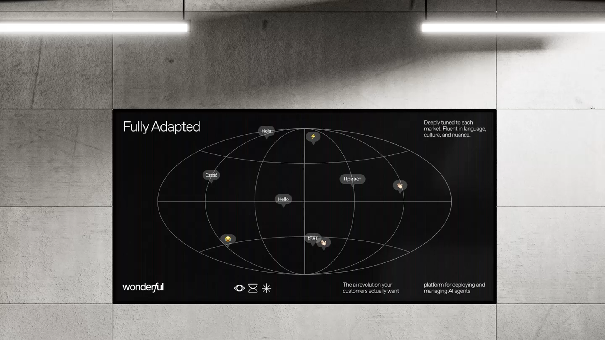
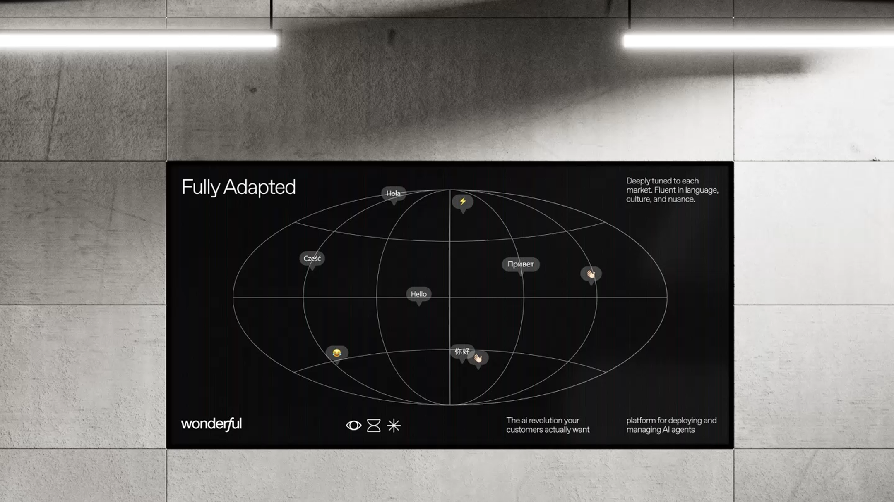

brand sprint for wonderful
in the vast expanse of the desert, the founder watched the sun paint the sky in impossible colors.
"wonderful," he whispered. in that moment, he knew.
we chose sunset lamps as our visual language because they capture that exact feeling –
the type of wonderful that stops you in your tracks, that makes you believe in magic again.
the warm glow, the gentle transition from day to night, the promise of something beautiful –
this is the wonderful we felt. this is the wonderful we designed.
creative director | eden vidal, inbal lapidot vidal
brand designer | hadar lozon
motion design | artem samoilyk

 
